Abstract Art
 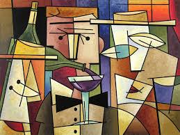 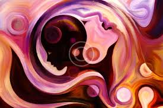 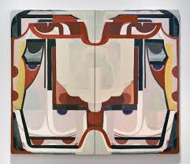
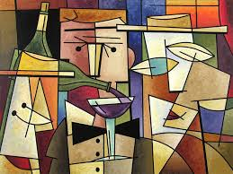 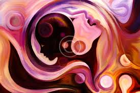 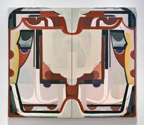
Abstract art is art that does not attempt to represent an accurate depiction of a visual reality but instead achieves its effect through the use of shapes, colors, forms, and gestural marks. Marks exist independently, but they are linked by an energy, movement, or feeling. Abstract art has been around for over a century. It can be whatever you want. There are rules and there are no rules. People can use abstract to explore things they see in their heads rather than their eyes. Abstract art allows you to be creative and express yourself.
Cubism Art
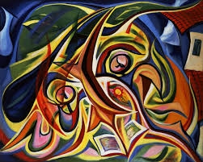 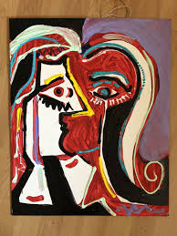 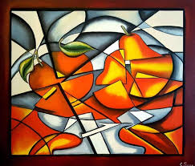 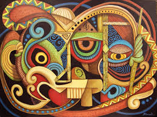Cubism was a revolutionary new approach to representing reality developed by artists Pablo Picasso and Georges Braque around 1907-08. They combined different perspectives on subjects in the same painting, resulting in paintings that appear fragmented and abstracted. The cubists wanted to show the entire structure of objects in their paintings without using realistic techniques like perspective or graded shading. They wanted to show things as they really are, not just how they appear. the visible world's forms into fragments drawn from multiple points of view, then constructing an image from them with its own internal logic.
Graffiti Art
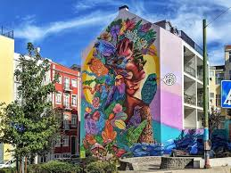 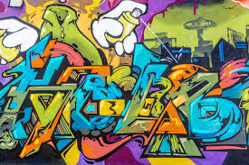 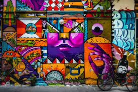 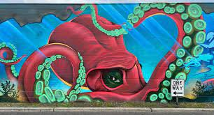Graffiti art is the term used to describe images or text that are spray painted onto buildings. The contemporary graffiti style has been heavily influenced by hip hop culture and the myriad international styles derived from Philadelphia and New York City Subway graffiti, but there are many other notable twentieth-century graffiti traditions. Graffiti is essential for artists to express their identity and frustrations while also honoring and preserving their culture and history. Graffiti is a type of public art that is much more than spray-painted profanity and symbols. Graffiti, when done correctly, adds a creative atmosphere to cities and towns. Graffiti can be considered beautiful in the same way that a butterfly mural is.